Before you start Batch B11¶
Before you start · Batch B11 — Bay ducting (PETG V0)

Time: 25.0 h (5 plates) — PrusaSlicer 2.9.6 estimates: 11.9 h before kit (B11-P1 to P3, 173 g), 13.1 h after the kit-day measurements (B11-P4 and B11-P5, 175 g). 348 g of Jet Black PETG V0 in all. Not part of the 157.0 h ASA run, and none of its numbers are in the run's totals.
Sessions: 5 plate starts (~5 min hands-on each, all day plates), ~10 min for the coupon test, ~15 min to inspect and bin; ~35 min of bay measuring on kit day, before P4 and P5, and ~15 min for the A/B lead check after Checkpoint 06.
Prerequisites: nothing from the ASA run. No part here holds a bearing or takes a press fit, so neither Gate A nor Gate B applies. Needs one 1 kg spool of Prusament PETG V0 Jet Black (not yet bought) and the textured sheet. P4 and P5 print right after kit day, as soon as the kit-day bay measurements (B11.10, B11.11) are done, and must be binned before Ch 09 Step 09.6 lays the DC loop. The A/B motor-lead check (B11.9) does not gate them: it needs the gantry hung, so it runs after Checkpoint 06, and a short lead gets a longer replacement before Ch 10. Layout v3 stands either way.
What this batch builds. Layout v3 replaces LDO's five PVC wire ducts in the electronics bay with two printed conduits, made from MyStoopidStuff's remix of RyanDam's Cable Management Duct. The DC conduit is one loop: curved 90° corners, two T-junctions, a 45° S-jog up to the Z-chain notch, and a middle run narrowed to 22 mm so it fits between the Leviathan and the PSU. The AC conduit is MSS's wire box at its original size by the WAGO bus, two re-radiused 90° curves down to a 34 mm run over the bed-lead hole, a T behind the SSR, and a divider fin at the PSU terminals. The closest AC-to-DC approach is 12.0 mm on the layout (verify on bench). Fitting them is Ch 09's and Ch 10's job; this page only prints them. Design record: review/2026-09-23-bay-mods/layout-v3/layout-v3.md.
Printed parts
Every part is Jet Black PETG V0 ("Black" below). g ea is each piece sliced alone with slicer/bay-ducts-petg.ini, purge line included, so the column does not sum to a plate line. Repo paths are under slicer/stl/bayducts/: mss/502306/ is MSS's stock file from Printables 502306, fetched by slicer/fetch_stls.py; remix/ is remixed for the LDO Rev D+ bay in this repo. All GPL-3.0; credit and licence in slicer/stl/bayducts/README.md.
| STL | Repo path | Qty | Colour | g ea | Bin |
|---|---|---|---|---|---|
V3L_COUPON_22N_DUCT.stl |
bayducts remix/ · before kit |
1 | Black | 3.0 | 09-ducts |
V3L_COUPON_22N_DUCT_COVER.stl |
bayducts remix/ · before kit |
1 | Black | 1.1 | 09-ducts |
CMD_V3_1H_154mm_DUCT.stl |
bayducts mss/502306/ · before kit |
2 | Black | 21.0 | 09-ducts |
CMD_V2_6B_154mm_DUCT_COVER.stl |
bayducts mss/502306/ · before kit |
2 | Black | 8.1 | 09-ducts |
CMD_V3_1H_90DEG.stl |
bayducts mss/502306/ · before kit |
2 | Black | 9.2 | 09-ducts |
CMD_V2_6B_90DEG_COVER.stl |
bayducts mss/502306/ · before kit |
2 | Black | 3.7 | 09-ducts |
V2L_90DEG_MIRROR.stl |
bayducts remix/ · before kit |
1 | Black | 9.2 | 09-ducts |
V2L_90DEG_COVER_MIRROR.stl |
bayducts remix/ · before kit |
1 | Black | 3.7 | 09-ducts |
CMD_Remix-V3_DUCT-2B_45deg.stl |
bayducts mss/502306/ · before kit |
2 | Black | 7.3 | 09-ducts |
CMD_Remix-V3_DUCT-2B_45deg_LID.stl |
bayducts mss/502306/ · before kit |
2 | Black | 2.8 | 09-ducts |
V3L_WIRE_BOX_PORT.stl |
bayducts remix/ · before kit |
1 | Black | 17.7 | 09-ducts |
CMD_V2_6B_WIRE_BOX_COVER.stl |
bayducts mss/502306/ · before kit |
1 | Black | 7.4 | 09-ducts |
V3L_90DEG_R15.stl |
bayducts remix/ · before kit |
2 | Black | 2.8 | 09-ducts |
V3L_90DEG_R15_COVER.stl |
bayducts remix/ · before kit |
2 | Black | 1.3 | 09-ducts |
CMD_V3_1H_T_SHORT.stl |
bayducts mss/502306/ · before kit |
1 | Black | 9.0 | 09-ducts |
CMD_V2_6B_T_SHORT_COVER.stl |
bayducts mss/502306/ · before kit |
1 | Black | 3.7 | 09-ducts |
CMD_Remix-V3_DUCT-1M_ENDCAP.stl |
bayducts mss/502306/ · before kit |
2 | Black | 1.4 | 09-ducts |
V2L_STRIP_FIN.stl |
bayducts remix/ · before kit |
1 | Black | 5.0 | 10-wiring |
V2L_58mm_DUCT.stl |
bayducts remix/ · after kit |
3 | Black | 7.9 | 09-ducts |
V2L_58mm_DUCT_COVER.stl |
bayducts remix/ · after kit |
3 | Black | 3.1 | 09-ducts |
V2L_130mm_DUCT.stl |
bayducts remix/ · after kit |
1 | Black | 17.8 | 09-ducts |
V2L_130mm_DUCT_COVER.stl |
bayducts remix/ · after kit |
1 | Black | 6.9 | 09-ducts |
V2L_70mm_DUCT.stl |
bayducts remix/ · after kit |
1 | Black | 9.6 | 09-ducts |
V2L_70mm_DUCT_COVER.stl |
bayducts remix/ · after kit |
1 | Black | 3.7 | 09-ducts |
V3L_10mm_DUCT.stl |
bayducts remix/ · after kit |
3 | Black | 1.5 | 09-ducts |
V3L_10mm_DUCT_COVER.stl |
bayducts remix/ · after kit |
3 | Black | 0.6 | 09-ducts |
V3L_34mm_DUCT_HOLE.stl |
bayducts remix/ · after kit |
1 | Black | 4.1 | 09-ducts |
V3L_34mm_DUCT_COVER.stl |
bayducts remix/ · after kit |
1 | Black | 1.8 | 09-ducts |
V3L_154N_DUCT.stl |
bayducts remix/ · after kit, if gap ≥ 25 mm |
2 | Black | 20.3 | 09-ducts |
V3L_154N_DUCT_COVER.stl |
bayducts remix/ · after kit, if gap ≥ 25 mm |
2 | Black | 7.5 | 09-ducts |
V3L_T_REG_N.stl |
bayducts remix/ · after kit, if gap ≥ 25 mm |
2 | Black | 13.5 | 09-ducts |
V3L_T_REG_N_COVER.stl |
bayducts remix/ · after kit, if gap ≥ 25 mm |
2 | Black | 5.4 | 09-ducts |

Layout v3 drawn on LDO's Rev D placement photo, front of the printer at the top. Apparent millimetres, ±6 % absolute and ±1.5 mm on local gaps: every position is (verify on bench). Photo: LDO Motors; drawing: this repo.
Which piece goes where: the two stock 154s are the front run; the three corners are front-left (the mirrored one), front-right and rear-right; the 45° pair is the S-jog; the 58s are L1, R1 and rear-lower, the 130 is L2, the 70 is R2; the three 10 mm pieces are the DC rear-upper run, the SSR run's right end and the stub up into the wire box's port. Positions and clearances: review/2026-09-23-bay-mods/layout-v3/layout-v3.md.
Options, not plated:
- Orange endcaps. The two
CMD_Remix-V3_DUCT-1M_ENDCAPcan be printed in the spare Prusament ASA Prusa Orange instead, as a visual mark on the AC conduit's ends. Load the STL on its own withslicer/voron-coreone-asa.iniand the smooth sheet. No plate, no ledger line; the black pair on B11-P3 is the default. - WARNING lid. MSS's lettered
CMD_Remix-V3_DUCT-1V_WIRE_BOX_LID_WARNING+ inlay (Printables 505838) is a two-colour body and waits for the INDX. B11 prints the plainCMD_V2_6B_WIRE_BOX_COVER. - Fallback middle run. If the Leviathan-to-PSU gap measures under 25 mm, skip B11-P5 and print stock
CMD_V3_1H_T_REG+ cover in place of eachV3L_T_REG_N, plus oneCMD_V3_1H_82mm_DUCT+ cover, and keep LDO's PVC middle duct. Those four files are vendored inmss/502306/but on no plate.
Hardware: none to print. Mounting hardware and tape belong to Ch 09.
Read first
- Not Voron spec. The ducts carry no load, so B11 has its own bundle,
slicer/bay-ducts-petg.ini: system filamentPrusament PETG V0 @COREONE HF0.4, 0.20 mm layers, 3 perimeters, 4 top and 4 bottom, 20 % grid infill, no supports. Printer settings and the cold start G-code are the ASA run's. Grid, not gyroid: gyroid infill curls with PETG on this printer. Every key:slicer/OVERRIDES.md§ Bay-duct bundle. - Textured sheet. Prusa does not recommend PETG V0 on smooth PEI: it bonds hard enough to damage the sheet, and that damage is not covered by warranty. Swap back to the smooth sheet before the next ASA plate.
- AFS flaps. The bundle's filament start G-code sends
M106 P3 S160and its end G-codeM106 P3 R, so the bypass flaps lift for PETG with Chamber Filtration left on Adv. Filtration. Print from Connect or USB, not OctoPrint: the fixed P3 target makesM141log an error OctoPrint would halt on. - Arrangement provisional, GUI QC pending. All five plates were packed by
slicer/nest.pyat a 6 mm gap and sliced from the CLI; none has been opened, arranged and re-saved in PrusaSlicer yet. Before each first print: Arrange Current Bed (6 mm, rotations on), save overslicer/plates/B11-Pn.3mf, thenpython3 slicer/build_plates.py --from-3mf B11-Pnandpython3 slicer/check_docs.py. - Two groups. P1 to P3 need nothing measured and can print whenever the printer is free. P4 holds the custom lengths and P5 the narrowed middle run; both wait for the kit-day bay measurements, and P5 also waits for the coupon test. The A/B lead check after Checkpoint 06 only decides whether a longer replacement lead is needed.
- Every part is Jet Black. Nothing here is dimension-critical beyond the lid snap, which the coupon tests.

Helper steps: 3 · B11.8, B11.10, B11.14